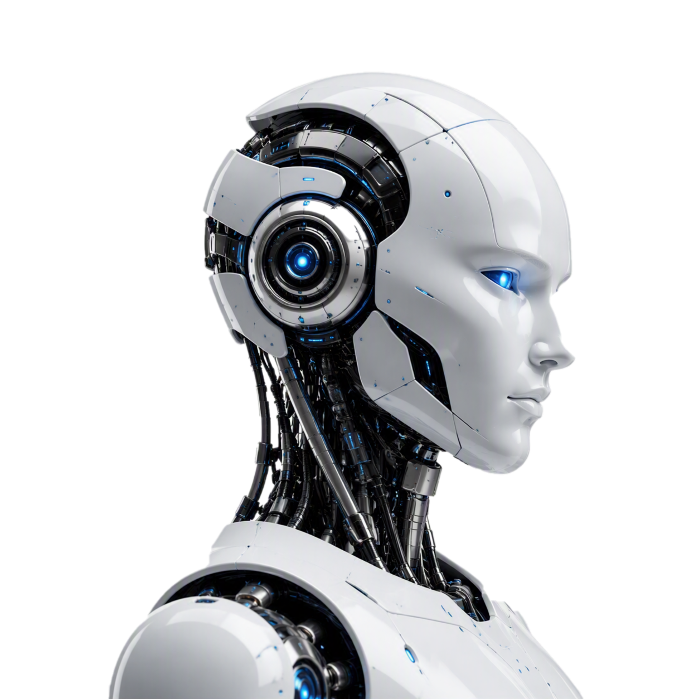
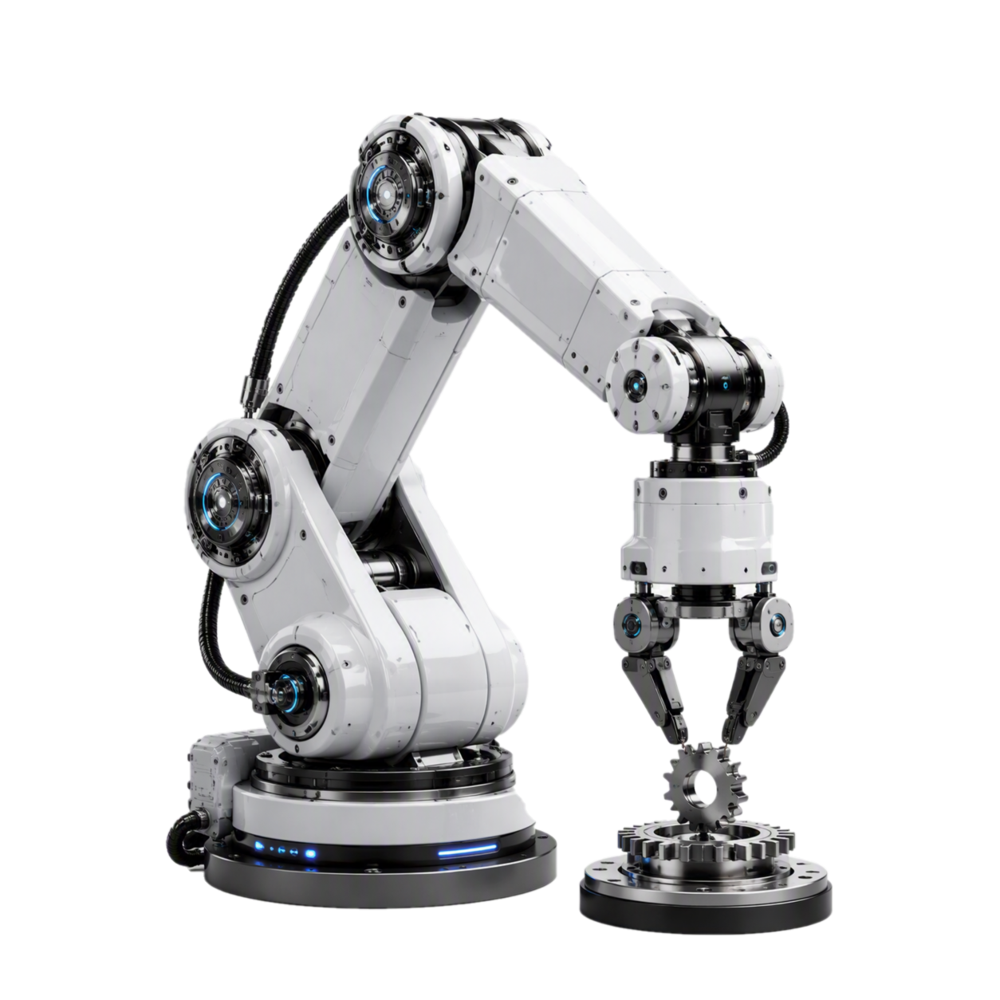
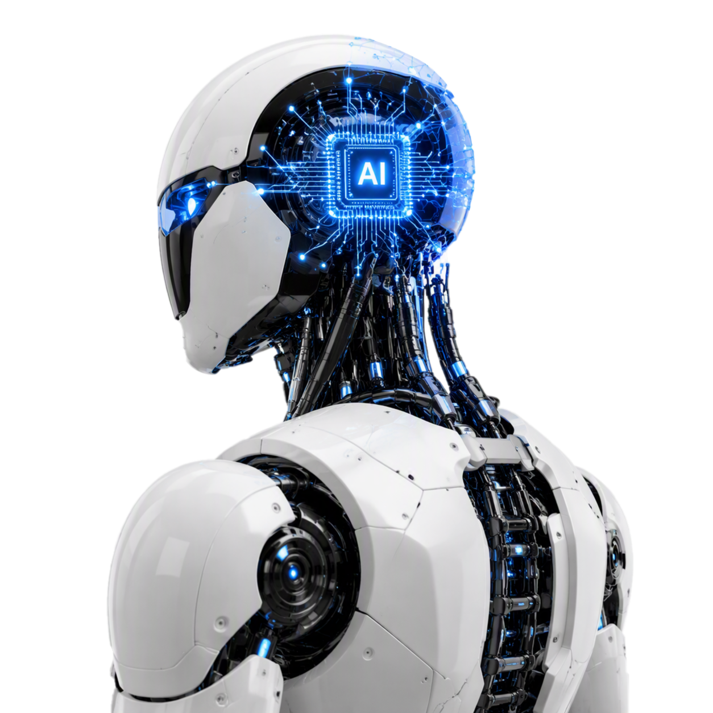
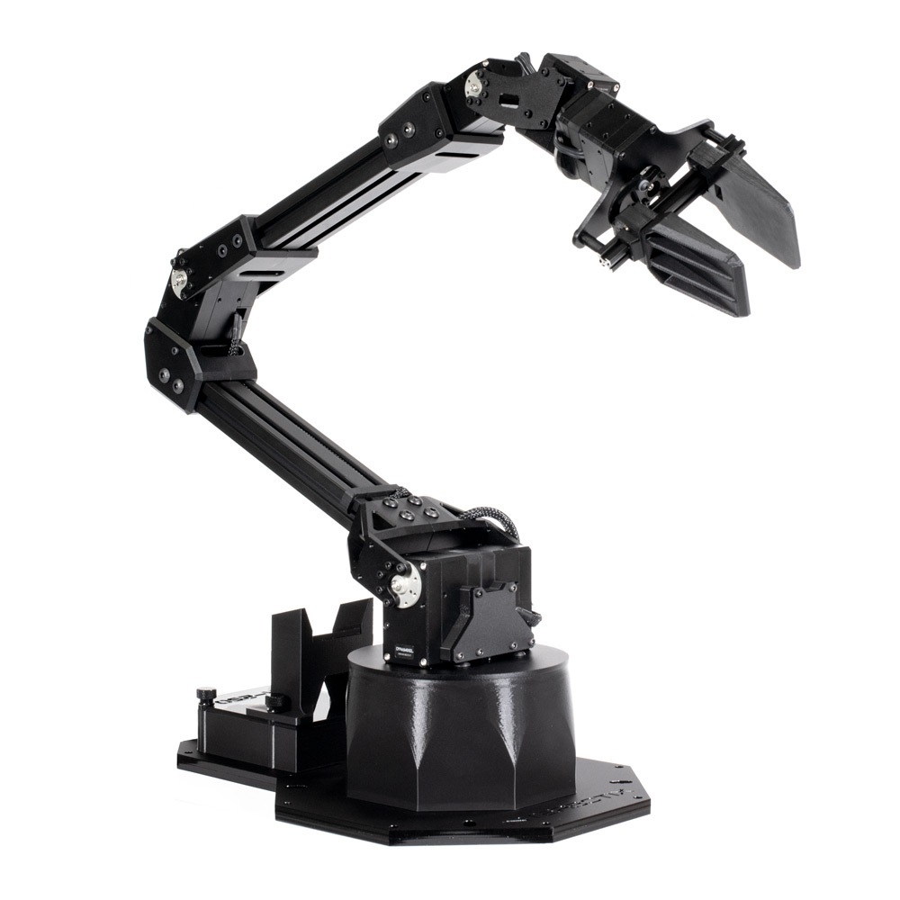
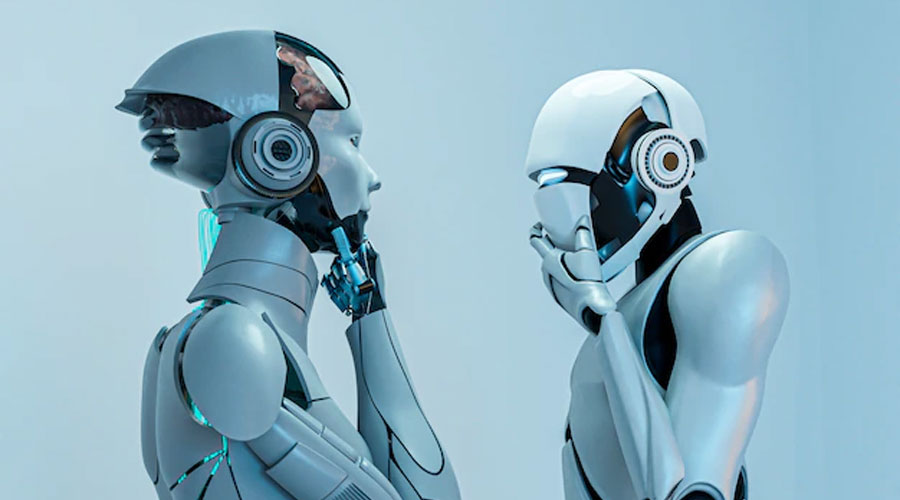
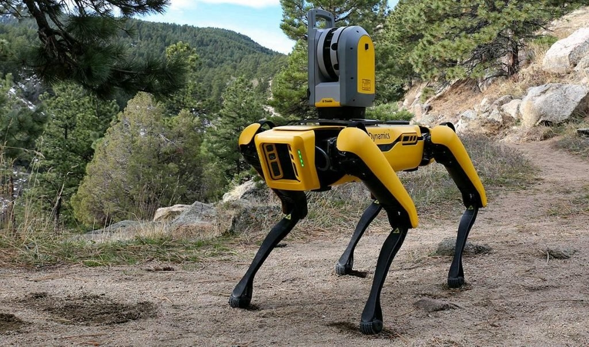
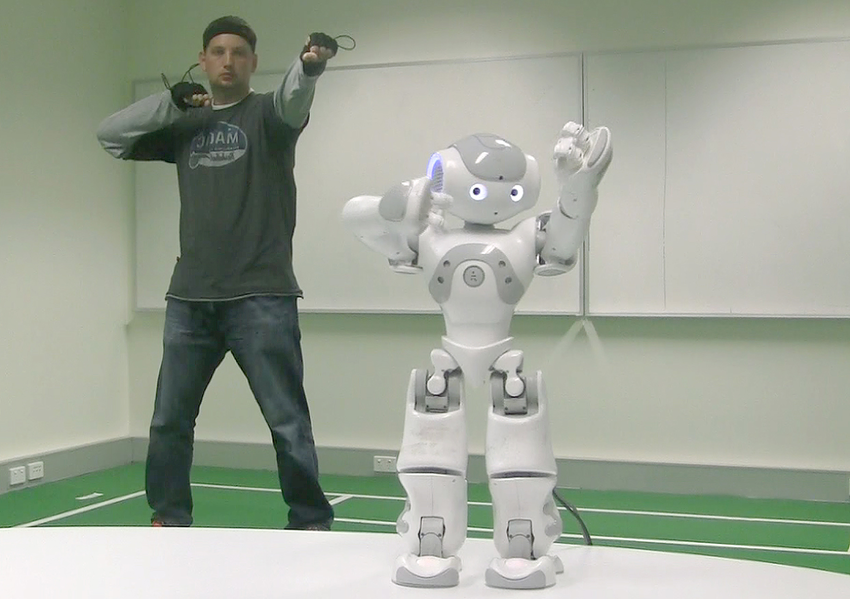
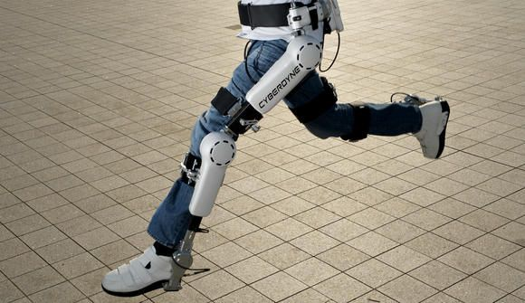

Design
Every robot has some form of mechanical construction — a frame, body or shape made from parts like motors, gears and joints, and engineered to help it complete a specific task.
No matter how simple or advanced, almost every robot is built around the same three core properties.

Every robot has some form of mechanical construction — a frame, body or shape made from parts like motors, gears and joints, and engineered to help it complete a specific task.

Robots rely on electrical components to control and power their machinery, turning stored energy into precise, repeatable motion through circuits, sensors and actuators.

At their core, robots run on code. A set of programmed instructions tells the robot what to do — giving it anything from a fixed routine to full, independent decision-making.
Each type of robot is suited to a different job. Here are five of the main categories you'll come across today.

Pre-programmed robots work in a controlled environment, carrying out simple, repetitive tasks — like a robotic arm on an automotive assembly line that welds or places the same part again and again.

Humanoid robots look like or mimic human behaviour. They perform human-like activities such as running, jumping and carrying objects — and some can even hold a conversation.

Autonomous robots operate independently of human operators. Using sensors and AI, they carry out tasks in open, changing environments without needing direct supervision.

Teleoperated robots are semi-autonomous machines controlled by a human over a wireless network — perfect for dangerous jobs like bomb disposal or deep-sea repair, done from a safe distance.

Augmenting robots enhance a person's existing abilities or replace capabilities they may have lost — think powered exoskeletons or advanced robotic prosthetic limbs.